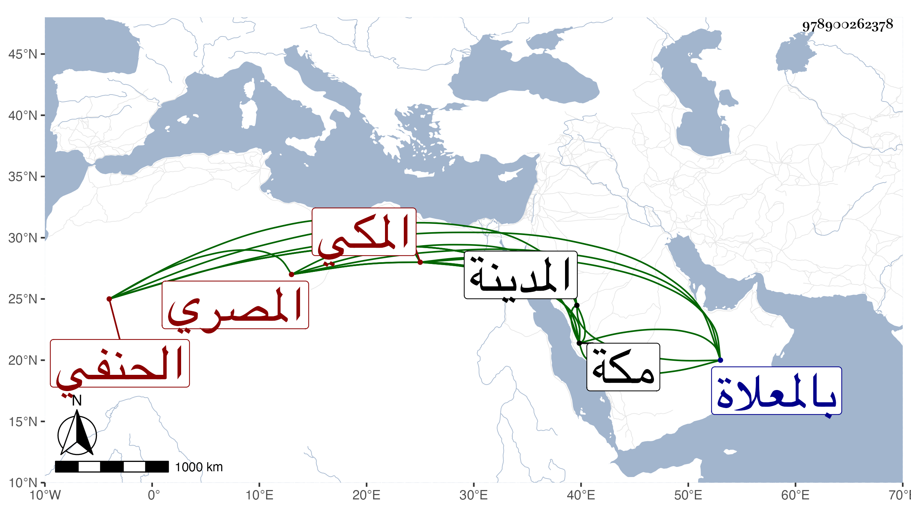

0902Sakhawi.DawLamic.ITO20230111-ara1.EIS1600.978900262378
Biography ID: 978900262378
560
علي بن أحمد بن أبي بكر بن حسين العلاء المصري ثم المكي الحنفي ويعرف بالوشاقي . ولد في سنة ست وثمانين وسبعمائة وتفقه بالسراج قارئ الهداية وتلا بالسبع أو بعضها على الشمس النشوي وأخذ فنونا عن العز بن جماعة ، وقدم مكة في آخر سنة اثنتين وعشرين فأقام بها قريبا من أربع سنين ، وجاور بالمدينة النبوية غالب سنة ست وعشرين ، وكان ذا معرفة بالقراءات والعربية والفقه وأصوله وغيرها طارحا للتكلف متقشفا مكثرا من العبادة مع حدة خلق . مات برباط ربيع في سادس عشري رمضان سنة سبع وعشرين ، ودفن بالمعلاة رحمه الله . ترجمه الفاسي في مكة .
